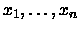

Given a specified total t and a list of n integers, find all distinct sums
using numbers from the list that add up to t. For example,
if t = 4, n = 6, and the list is [4, 3, 2, 2, 1, 1], then there are
four different sums that equal 4: 4, 3+1, 2+2, and 2+1+1. (A number can be
used within a sum as
many times as it appears in the list, and a single number counts as a sum.)
Your job is to solve this problem in general.
The input file will contain one or more test cases, one per line. Each test
case contains t, the total,
followed by n, the number of integers in the list, followed by n integers
.
If n = 0 it
signals the end of the input; otherwise, t will be a positive integer less
than 1000, n will be an
integer between 1 and 12 (inclusive), and
will be positive integers less than 100. All
numbers will be separated by exactly one space. The numbers in each list
appear in nonincreasing order, and there may be repetitions.
For each test case, first output a line containing `Sums of ', the total, and
a colon. Then output
each sum, one per line; if there are no sums, output the line `NONE'.
The numbers within each
sum must appear in nonincreasing order. A number may be repeated in the sum
as many times
as it was repeated in the original list. The sums themselves must be sorted
in decreasing order
based on the numbers appearing in the sum. In other words, the sums must be
sorted by their
first number; sums with the same first number must be sorted by their second
number; sums
with the same first two numbers must be sorted by their third number; and
so on. Within each
test case, all sums must be distinct; the same sum cannot appear twice.
4 6 4 3 2 2 1 1
5 3 2 1 1
400 12 50 50 50 50 50 50 25 25 25 25 25 25
0 0
Sums of 4:
4
3+1
2+2
2+1+1
Sums of 5:
NONE
Sums of 400:
50+50+50+50+50+50+25+25+25+25
50+50+50+50+50+25+25+25+25+25+25
Miguel A. Revilla
1998-03-10